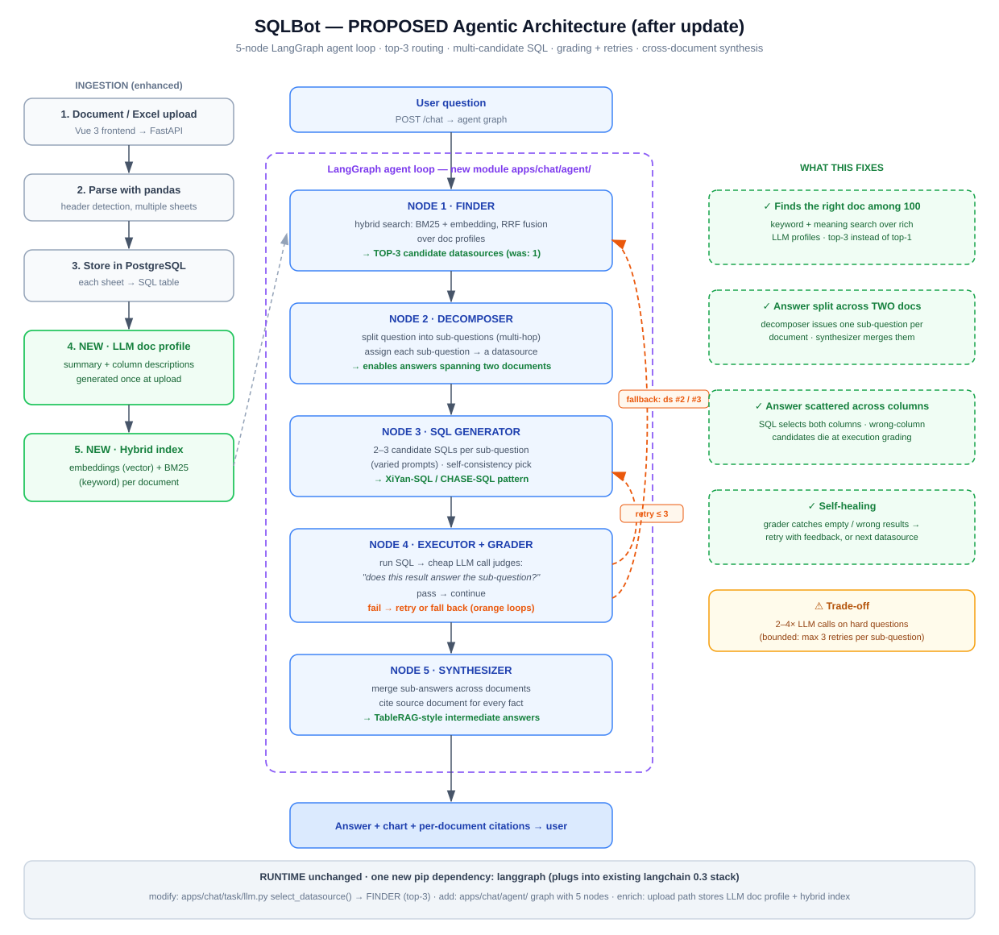

Diagram 1: current linear pipeline · Diagram 2: proposed 5-node LangGraph agent loop

AFTER: Finder (hybrid, top-3) → Decomposer → multi-candidate SQL → Executor+Grader with retry/fallback loops → Synthesizer with citations. Green boxes show what each piece fixes.